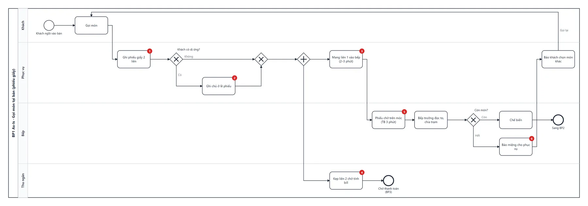
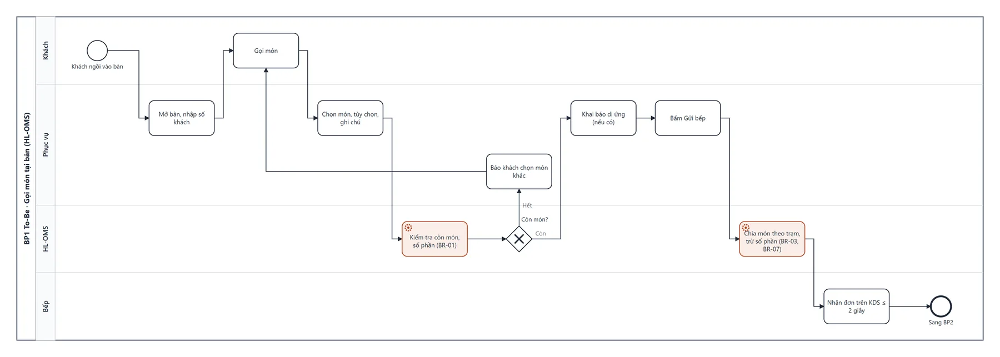
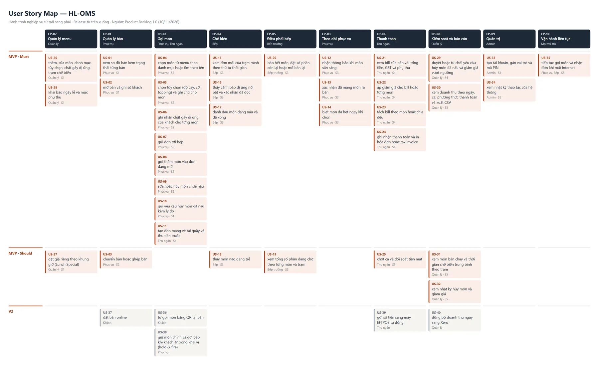

Paper tickets at 45 orders an hour
Waiters write orders on paper and walk them to the kitchen. At a Friday peak of 45 orders an hour, that produces measurable losses — the baseline every later decision is judged against.
Business objectives
- Cut wrong or missed dishes from 3–5 a day to at most 1 within six months of go-live.
- Get each order to the right kitchen station instantly, with live status for every dish.
- Calculate bills correctly, including GST and public-holiday surcharges.
Prices include 10% GST · public-holiday surcharge shown upfront · tax invoices on request · allergen information for the declared allergen groups · data stored in Australia.
Six pain points, each with evidence
Elicitation followed a plan: a structured first meeting with a question log tied to who answers and how, then observation and a survey. Findings went into decision and change logs rather than silent edits. On the as-is process I marked six numbered pain points, so the to-be design shows exactly which one each change removes.


Stakeholder analysis, a RACI, a risk register and 23 measurable NFRs — rewritten from vague drafts like "the system must be fast" — completed the picture.
From seven needs to 73 acceptance criteria
- 7 business needsEach with a measured baseline and a six-month target.
- 40 user stories, 73 acceptance criteria35 in the MVP, laid out on a story map across 10 epics and 3 releases.
- 20 use cases and 21 business rulesSeven detailed use-case specifications with activity diagrams; every rule has a truth table.
- 34 functions and 5 state machinesOrder and order item get separate lifecycles, because an order's status is derived from its dishes.

The allergy rule was first written with AND. Walking through the use-case exception flow showed it was really OR — "no allergy declared or the allergy note has been read". I corrected the logic and added a truth table for every rule.
Four sub-apps, one order flow
A web app with four parts: the waiter app (table map and ordering), the kitchen display (per-station queues, dish status, sold-out items), the cashier (bills, split bills, GST and surcharges) and the manager portal (menu, reports, accounts, audit log). The 19-screen prototype runs the business rules and syncs in real time across browser tabs.
Deliverables
- Admin logs — assumptions, questions, decisions, changes
- Discovery — BACCM, elicitation plan and results, meeting pack and minutes
- Analysis — stakeholders, RACI, risks, 23 NFRs
- Process — 7 BPMN as-is/to-be
- Behaviour — 20 use cases, 21 rules, 34 functions, 5 state machines
- UI/UX — sitemap, user flows, 19-screen prototype
- Documents — BRD, SRS, UAT, user guide, go-live plan
- Pitch — business case and pitch deck
Business errors found before go-live
Because the prototype runs the rules, user testing found business errors, not only layout issues — for example a split bill that was one cent short, which a static wireframe would never reveal.
Business case Simulated figures
| Year-1 cost | AUD 49,200 |
| Annual benefit | AUD 40,700 |
| Payback | ≈ 18 months |
| 3-year NPV | AUD 45,900 |
What this case shows
- A need without a baseline cannot prove value. The first BACCM had qualitative needs only; the revision split them into seven needs with numbers.
- Pure Scrum does not fit a client who signs fixed scope and budget. Discovery to lock the BRD/SRS, then sprints, matched how the client buys.
- Anything counted by hand will eventually be wrong. A hand count of high-priority tests came out at 56 instead of 55, so the RTM and test counts are now generated and fail on any gap.